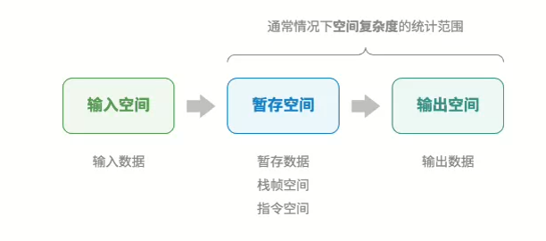
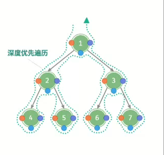
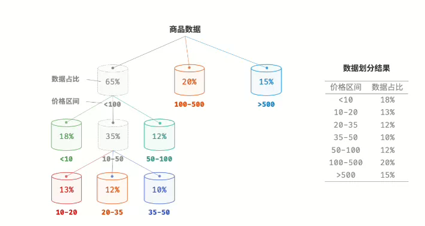
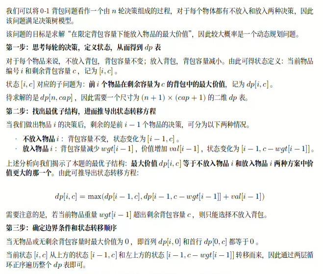

Hello 算法阅读笔记¶
简介¶
本算法书来自github的一个万星的开源项目，对于来说初学者是一本算法的入门书籍，对于算法有些经验的来说是算法的复习资料（github地址）。我当时是边刷代码随想录题目边复习巩固算法知识看的，就粗略地从头到尾看了一遍，下面是我看这本算法书的阅读笔记，主要包括一些比较陌生、新颖的算法知识点和一些比较重要的算法知识。
第二章 复杂度分析¶
- 算法的空间复杂度的分类：一般只统计暂存数据、栈帧空间、输出数据三部分（有时候输出数据也不统计）,通常只关注最差空间复杂度（最差输入数据为准，算法运行中的峰值内存和磁盘占用大小）。

第三章 数据结构分类¶
逻辑结构
- 线性结构：数组、链表、队列、栈、哈希表，元素之间是一对一的顺序关系
- 树形结构（非线性）：树、堆、哈希表，元素之间是一对多的关系
- 网状结构（非线性）：图，元素之间是多对多的关系
物理结构
- 分为连续空间储存和分散空间储存，分别对应数组和链表
- 基于数组可以实现：栈、队列、哈希表、树、堆、图、矩阵、张量（维度 ≥ 3 的数组）等
- 基于链表可以实现：栈、队列、哈希表、树、堆、图等
基本数据
- 是指可以直接被CPU进行运算的类型
字符编码
- UTF-8是Unicode编码方法的一种实现，其他的实现有UTF-16,其中UTF—8是一种变长编码，UTF—16是一种定长编码，计算机更好取值，可以做到立即取值
- Java的String类型采用UTF-16编码，超过16位的字符有额外的处理机制
- 在文件存储和网络传输中我们一般采用UTF-8编码
第四章 数组与链表¶
列表
- 表示元素的有序集合，支持元素增删改查功能，而不需要考虑容量限制问题，可以基于链表或数组实现。
- 基于数组的实现的话，需要考虑扩容的问题，一般是扩容二倍。
内存与缓存
- 相比链表来说，数组具有更好的空间局部性，故缓存命中率一般更高，故基于数组实现的算法一般更加受欢迎。
- 数组特别在需要大量计算的情况下很受欢迎，例如：AI模型等。
第五章 栈与队列¶
栈
- 栈可以视为一种受限制的数组或链表。换句话说，我们可以“屏蔽”数组或链表的部分无关 操作，使其对外表现的逻辑符合栈的特性。
- 典型应用：程序内存管理（栈帧），浏览器中的后退与前进、软件中的撤销与反撤销。
队列
- 循环队列：一般是基于数组的循环队列，利用取余实现循环。
- 双向队列：两端都可以进出元素，可以基于链表（双向链表）或数组（与用数组实现循环队列类似）实现。典型应用有：软件的撤销一般用栈来实现，但由于资源的限制撤销的步数是有限的，这时需要使用双向队列。
第六章 哈希表¶
哈希冲突（哈希的重点就是减少哈希冲突）
- 本质原因：哈希函数的作用是将所有 key 构成的输入空间映射到数组所有索引构成的输出空间，而输入空 间往往远大于输出空间。因此，理论上一定存在“多个输入对应相同输出”的情况。
- 负载因子：定义为哈希表中的元素数量除以桶数量，用于衡量哈希冲突的严重程度，常用作哈希表扩容的触发条件
- 哈希算法的衡量指标，目标：确定性（必要条件）、效率高、均匀分布，关于安全方面的衡量指标：单向性、抗碰撞性（极难找到两个不同的输入使得其哈希值相同）、雪崩效应（输入的微笑变化应当导致输出的显著且不可预测的变化）
- 编程语言关于hash方面：编程语言通常会为基本数据类型提供内置的哈希算法。Java中当碰撞因子大于0.75就进行扩容。
第七章 二叉树¶
- 完全二叉树、完美二叉树、完满二叉树（除叶节点之外，其余所有的节点都有两个子节点）。
- 对于前序、中序、后序遍历的理解，都属于dfs。下图描述了对二叉树进行深度优先遍历的工作原理。深度优先遍历就像是绕着整棵二叉树的外围“走”一 圈，在每个节点都会遇到三个位置，分别对应前序遍历、中序遍历和后序遍历。

- 二叉树的实现：一般是基于链表实现，但针对完全二叉树可以基于数组实现，对一些与完全二叉树差别不大的也可以用数组实现，只需要在空缺的地方用null填补即可。
第八章 堆¶
- 从使用角度来看，优先队列和堆看作等价的数据结构，C++就提供了优先队列。
- 堆的操作：元素入堆（从底自顶堆化）、堆顶元素出堆（先与堆的最后一个元素交换，再从顶至底堆化）、建堆（可以遍历堆化（倒序遍历堆（层序遍历的到序）进行堆化），可以在O(n)内建堆）
- 经典应用：Top-k（可以达到nlogk)，优先队列
第九章 图¶
- 邻接表结构与哈希表中的“链式地址”非常相似，因此我们也可以采用类似的方法来优化效率。 比如当链表较长时，可以将链表转化为 AVL 树或红黑树，从而将时间效率从 𝑂(𝑛) 优化至 𝑂(log 𝑛) ；还可 以把链表转换为哈希表，从而将时间复杂度降至 𝑂(1) 。实际中也可以考虑用哈希表来实现邻接表，在此不太推荐。
第十章 搜索¶
- 暴力搜索：线性搜索、DFS、BFS，算法复杂度为O(n)，简单通用，无须对数据做预处理和借助额外的数据结构。
- 自适应搜索：二分查找、哈希查找、树查找（在特定的树结构中，例如二叉搜索树）。
第十一章 排序¶
八大排序算法
- 插入、选择、冒泡
- 快排、归并、堆排
- 计数排序（实质上是桶排序的在整型数据下的一个特例）、基数排序（相比计算排序，适用数据量较大，但数据范围m较小的情况）、桶排序
排序算法的评价指标
- 运行效率、就地性、稳定性、是否基于比较
- 自适应性（自适应排序的时间复杂都会受到输入数据的影响）
插入排序、选择排序、冒泡排序的比较
-
快速排序这类 𝑂(𝑛 log 𝑛) 的算法属于基于分治策 略的排序算法，往往包含更多单元计算操作。而在数据量较小时，𝑛2 和 𝑛 log 𝑛 的数值比较接近，复杂度不 占主导地位；每轮中的单元操作数量起到决定性作用。
-
实际上，许多编程语言（例如 Java）的内置排序函数采用了插入排序，大致思路为：对于长数组，采用基于 分治策略的排序算法，例如快速排序；对于短数组，直接使用插入排序。
-
虽然冒泡排序、选择排序和插入排序的时间复杂度都为 𝑂(𝑛2) ，但在实际情况中，插入排序的使用频率显 著高于冒泡排序和选择排序，主要有以下原因： 冒泡排序基于元素交换实现，需要借助一个临时变量，共涉及 3 个单元操作；插入排序基于元素赋值实 现，仅需 1 个单元操作。因此，冒泡排序的计算开销通常比插入排序更高；选择排序在任何情况下的时间复杂度都为 𝑂(𝑛2) 。如果给定一组部分有序的数据，插入排序通常比选 择排序效率更高。 选择排序不稳定，无法应用于多级排序。
快速排序
- 在执行哨兵划分操作时，系统可将整个子数组加载到缓存，因此访问元素的效率较 高。而像“堆排序”这类算法需要跳跃式访问元素，从而缺乏这一特性。
- 可以使用基准数优化，例如取三个候选数的中位数作为基准数。利用尾递归优化快排的最坏空间复杂度，使得最坏空间复杂度为O(logn)。
桶排序
-
1.初始化 𝑘 个桶，将 𝑛 个元素分配到 𝑘 个桶中。 2. 对每个桶分别执行排序（这里采用编程语言的内置排序函数）。 3. 按照桶从小到大的顺序合并结果。
-
关键点在于将元素均匀分配到各个桶中，有具体的策略。

第十二章 分治¶
- 问题可以分解；子问题独立；子问题的解可以合并形成父问题的解
- 步骤：1. 分（划分阶段）。递归地将原问题分解为两个或多个子问题，直至到达最小子问题时终; 2. 治（合并阶段）。从已知解的最小子问题开始，从底至顶地将子问题的解进行合并，从而构建出原问题 的解。
- 常见的应用：大整数乘法；求解逆序对
- 效率提高的原因：操作数量的减少;可以并行花计算，对于每个子问题并行计算。例如归并排序。
第十三章 回溯¶
-
一种通过穷举来解决问题的方法，它的核心思想是从一个初始状态 出发，暴力搜索所有可能的解决方案，当遇到正确的解则将其记录，直到找到解或者尝试了所有可能的选择 都无法找到解为止。 回溯算法通常采用“深度优先搜索”来遍历解空间。
-
回溯的框架，要特别注意剪枝：接下来，我们尝试将回溯的“尝试、回退、剪枝”的主体框架提炼出来，提升代码的通用性。 在以下框架代码中，state 表示问题的当前状态，choices 表示当前状态下可以做出的选择。
/* 回溯算法框架 */
void backtrack(State *state, vector<Choice *> &choices, vector<State *> &res) {
// 判断是否为解
if (isSolution(state)) {
// 记录解 recordSolution(state, res);
// 不再继续搜索 return;
}
// 遍历所有选择
for (Choice choice : choices) {
// 剪枝：判断选择是否合法
if (isValid(state, choice)) {
// 尝试：做出选择，更新状态
makeChoice(state, choice);
backtrack(state, choices, res);
// 回退：撤销选择，恢复到之前的状态
undoChoice(state, choice);
}
}
}
- 回溯与递归的关系：回溯算法通常基于递归实现。然而，回溯是递归的应用场景之一，是递归在搜索问题中的应用；递归的结构体现了“子问题分解”的解题范式，常用于解决分治、回溯、动态规划（记忆化递归）等问题。
第十四章 动态规划¶
核心思想
将一个问题分解为一系列更小的子问题，并 通过存储子问题的解来避免重复计算，从而大幅提升时间效率。例如爬楼梯的递归解决和动态规划解决的对比，也可以通过记忆化搜索降低时间复杂度与dp相同。
需要满足的条件
最优子结构：即原问题的最优解是从子问题的最优解构建得来的。
无后效性：给定一个状态，它的未来发展只与当前状态有关，而与过去经历的所有状态无关。有后效果性的问题可以通过扩展状态定义使得问题重新满足无后效性。实际上，许多复杂的组合优化问题（例如旅行商问题）不满足无后效性。对于这类问题，我们通常会选择使 用其他方法，例如启发式搜索、遗传算法、强化学习等，从而在有限时间内得到可用的局部最优解。
问题判断与求解步骤
-
问题判断：如果一个问题包含重叠子问题、最优子结构，并满足无后效性，那么它通常适合用动态规划求解。dp和贪心问题都可以用回溯解决，且都属于决策树模型。
-
求解步骤：描述决策，定义状态，建立 𝑑𝑝 表，推导状态转移方程（由最优子结构决定），确定边界条件等。从本质上说dp表是状态与子问题的解之间的映射。
-
设计dp表时根据状态转移方程可以优化空间大小。
典型应用
- 0-1背包问题的dp设计思路

- 完全背包与零钱兑换问题是同一类问题
- 编辑距离，衡量两个字符串之间的距离或相似度
第十五章 贪心¶
核心思想
- 在问题的每个决策阶段， 都选择当前看起来最优的选择，即贪心地做出局部最优的决策，以期获得全局最优
贪心算法特性以及与动态规划的区别
- 贪心选择性质：只有当局部最优选择始终可以导致全局最优解时，贪心算法才能保证得到最优解。
- 最优子结构：原问题的最优解包含子问题的最优解。
- 与动态规划的区别： 动态规划会根据之前阶段的所有决策来考虑当前决策，并使用过去子问题的解来构建当前子问题的解。 贪心算法不会考虑过去的决策，而是一路向前地进行贪心选择，不断缩小问题范围，直至问题被解决。例如：爬楼梯，与前一个和前前一个状态有关，当前问题的解答。具体还理解不清楚，暂时就这样吧。
贪心解题步骤
- 问题分析：梳理与理解问题特性，包括状态定义、优化目标和约束条件等。这一步在回溯和动态规划中 都有涉及。
- 确定贪心策略：确定如何在每一步中做出贪心选择。这个策略能够在每一步减小问题的规模，并最终解 决整个问题。
- 正确性证明：通常需要证明问题具有贪心选择性质和最优子结构。这个步骤可能需要用到数学证明，例 如归纳法或反证法等。
典型应用和适用情况
- 适用情况：可以保证找到最优解，这时贪心往往比dp、回溯高效，因为贪心的决策不依赖于过去的决策，因此一般空间复杂度也低;可以找到近似最优解，对于很多复杂问题，找到全局最优解非常困难。
- 典型应用：最大容量问题（决策过程的设计->双指针法）、最大切分乘数问题